Network science, urban laws and scaling
Network Science: The Evolution of a ‘New’ Science
Not really new
Graph Theory in the 18th century
Leonhard Euler’s work on small graphs
High degree of regularity: similar degree centrality among different nodes
Regular graphs
1st milestone: Random networks (RN)
20th Century: advances in mathematics and statistics
Algorithmic network analysis
Erdős, Rényi, et al. (1960)
Large scale networks with no obvious structure
Nodes degree follows a Poisson distribution: similar degree, close to the average degree
, rare exceptions Representative of real world network?
1st milestone: Random networks (RN)
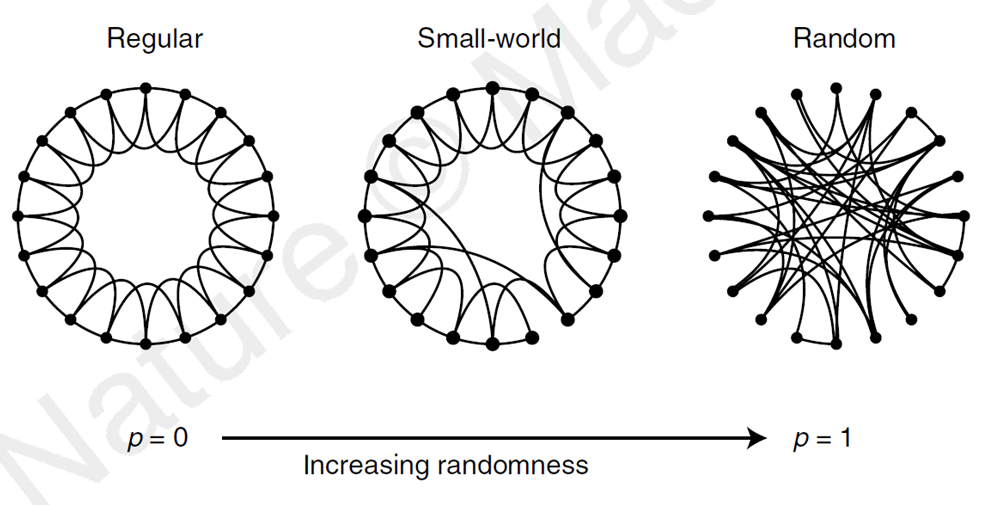
Source: Watts and Strogatz (1998)
1st milestone: Random networks (RN)
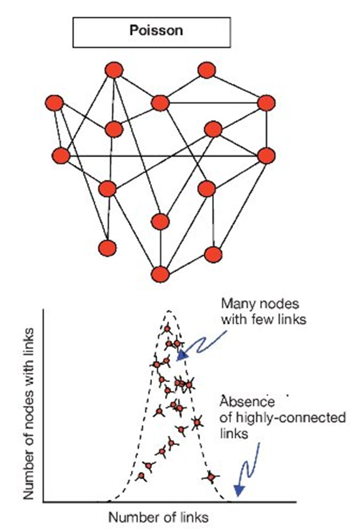
Source: Torres et al. (2009)
Networks become important…
… in different fields, from social science to biology
Digitization of data in many different fields + large databases ➔ real world systems as networks
Advances in computer science and in computing
Looseness between different disciplinary boundaries
Reductionist approaches lose ground in favor of holistic research approaches, which try to understand the system as a whole
2nd milestone: Small-worlds
Small world effect
Bacon number
Short average distances, enabling nodes to reach each other within a few steps
Characteristic of numerous real world networks
Structural characteristic rather than an organizing principle
Even RN networks are characterized by short average distances
2nd milestone: Small-worlds
Watts and Strogatz (1998) Small-world (SW) model
Coexistence of short average distance with high clustering coefficient
SW networks are located between regular and random networks:
Highly clustered like regular lattices
Small distances like random networks
Node degree distribution is quite similar with the RN and decays exponentially
2nd milestone: Small-worlds
A set of intensively interconnected local clusters, which gain global connectivity via a few links, which span the entire network linking distant clusters
Nodes in SW networks benefit from the high local connectivity and easy distant communication with remote clusters using the intra-cluster links
Probability of finding a highly connected node decreases exponentially as highly connected nodes are practically absent in RN and SW models
2nd milestone: Small-worlds
Source: Watts and Strogatz (1998)
2nd milestone: Small-worlds
Pros and cons
Social capital (bridging and bonding)
Disease spread
Real world examples?
3rd milestone: Scale-free (SF) networks
Barabási and Albert (1999)
Very few super connected nodes and a vast majority of less connected nodes
SF: nodes degree distribution follows a power law distribution regardless the scale of observation
2 main formation mechanisms:
growth: expansion of networks over time
preferential attachment: growth is not equally dispersed across the nodes; highly connected nodes are more likely to receive new links than the lower degree nodes
3rd milestone: Scale-free (SF) networks
An initial difference in the connectivity between two nodes will increase further as the network grows
This is a cumulative — rich get richer — process
The probability \(P(k)\) that a node has a degree \(k\) decays following a power function, with usually \(2 < \gamma < 3\)
\(P(k)≈𝑘^{−\gamma}\)
Power laws in networks are related with the existence of both of the above two mechanisms
Later versions of SF models included more realistic options for the network growth
3rd milestone: Scale-free (SF) networks
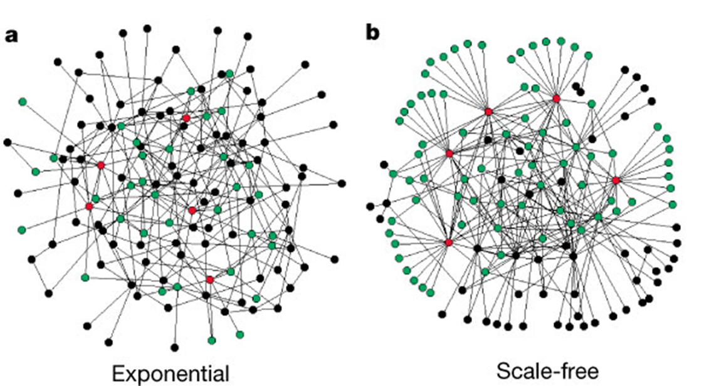
Source: Albert, Jeong, and Barabási (2000)
3rd milestone: Scale-free (SF) networks
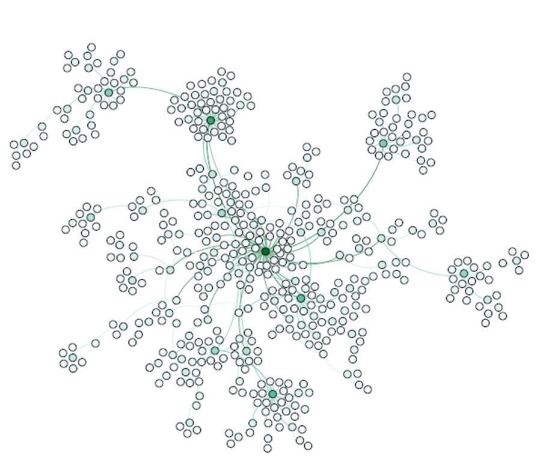
3rd milestone: Scale-free (SF) networks
And finally the power law…
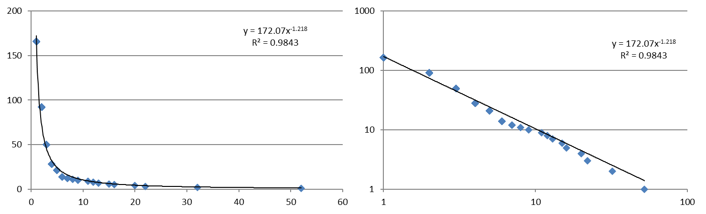
3rd milestone: Scale-free (SF) networks
Pros and cons?
Efficiency
Resilience
Disease spread prevention
Vulnerability towards targeted attacks
Real world examples?
Network Science: a summary
Both RN and SW have short average distances
RN cannot be included in SW because they lack the high clustering coefficient
SF networks share the short average distance and the high cluster coefficient of SW ones, but the SW are not characterized by the scale-free distribution
All scale free networks display small world properties, while all small-world networks are not necessarily scale free
Network science: An epistemological discussion
1. Complexity Science
Most studies in the network science domain have a starting point in statistical physics
Stochastic approaches
Underlying probability model which usually follows a power law
Main objective: identification of the underlying mechanisms using generative modelling and simulation
Potential risk: the probability model might not follow a power law mechanism, which is a common assumption
Network science: An epistemological discussion
2. Social Network Analysis
Sociology and graph theory
Focus on social networks
Extensive utilization of network metrics
Network science: An epistemological discussion
3. Geography and Urban Analytics
Softer approaches
Ex-post empirical modelling for identifying characteristics of theoretical network models in real world networks
Global and local network statistics
Use of network measures in mainstream statistical modelling
Empirical verification of the functions that better explain the node degree distribution (power vs. exponential functions)
Spatial networks, but also dynamic networks
Scaling
What is scale and scaling
Scale in geography
Scale in math:
\(y(x_i)\) a function of \(x_i\) where \(i\) is a spatial unit
If we scale \(x\) by some scalar \(\lambda\), the function scales if its scaled value is proportional to its previous value: \(y(\lambda x_i) \propto y(x_i)\)
\(y(x_i) = x_i^a\)
\(y(\lambda x_i) = (\lambda x_i)^a = \lambda^a x_i^a = \lambda^a y(x_i)\)
➔ Power law
Laws of urban scaling
Regularities
Quantitative revolution post WW2
Cultural turn
… today …
Metcalfe’s law / Moore’s law
As cities grow…
… the number of potential connections increases as the square of population.
\(C = p(p-1)/2 \propto p^2\)
von Thunen’s law
As cities grow in size …
land values decline non-linearly from the centre
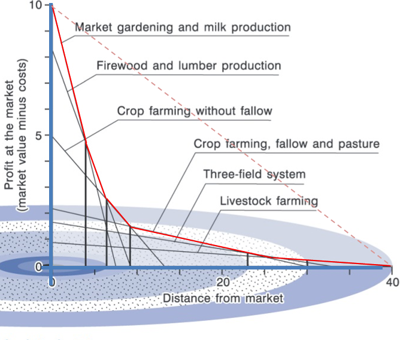
Source: Coe, Kelly, and Yeung (2019)
Law of gravitation / Tobler’s law
As cities grow…
.. interactions between them decline with increasing distance
Newton law of gravitation
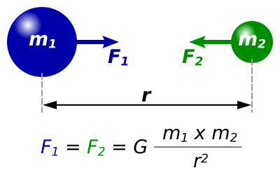
Source: I, Dennis Nilsson, CC BY 3.0, https://commons.wikimedia.org/w/index.php?curid=3455682
Zipf law
As cities get larger…
… there are less of them
Regularity in the distribution of cities within a country
Empirical observation and quantification
Hierarchical urban systems:
one/a few big cities
more medium size cities
large number of very small cities
Zipf law
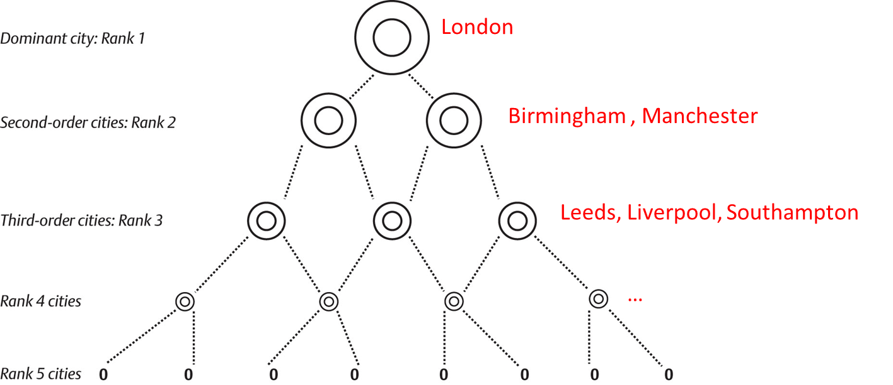
Zipf law
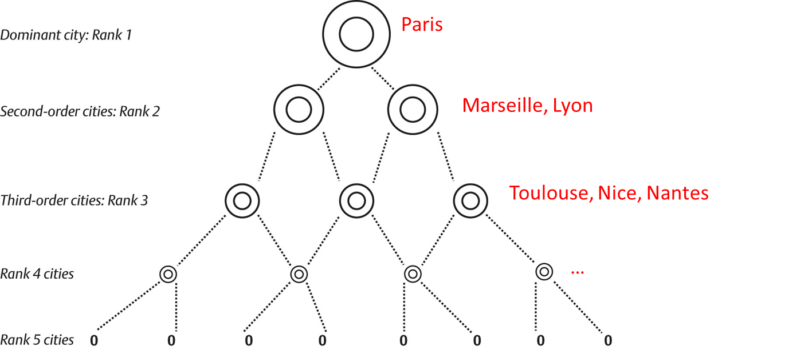
Zipf law
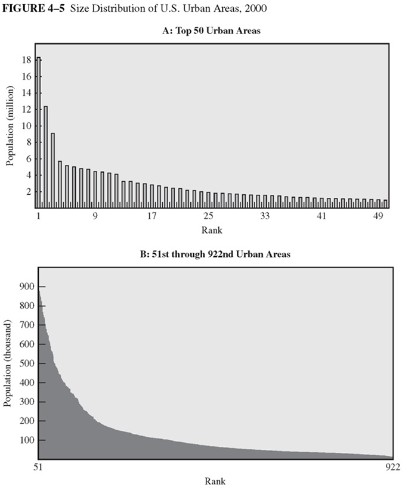
Source: O’sullivan (2012)
Rank size rule
\(pop_i = pop_d r_i^{-a}\)
if \(a=1\): Zipf law
\(pop_i = pop_d / r_i\)
Zipf law
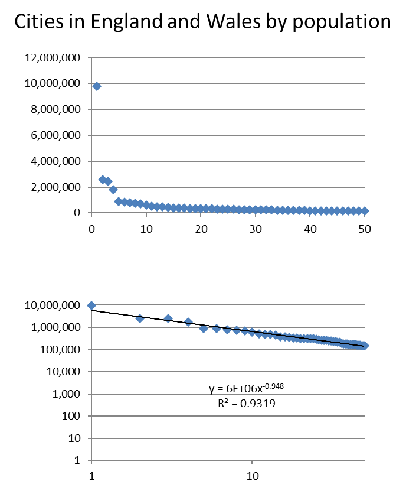
Rank size rule
\(pop_i = pop_d r_i^{-a}\)
if \(a=1\): Zipf law
\(pop_i = pop_d / r_i\)
Zipf law
Primary cities above what a Zipf law would predict
Newly industrialised countries
No overall consensus why the rank-size rule holds
Statistical regularity or an underpinning micro-economic process?
Bettencourt-West or Marshall’s law
As cities grow…
… their average real income (and wealth) increases more than proportionately (Bettencourt et al. 2007)
\(Y_i = Y_0P_i^\beta\)
\(Y_i\): material resources (energy or infrastructure) or social activity (wealth, patents, and pollution) in city \(i\)
\(Y_o\): normalization constant
\(P_i\): population of city i
\(\beta\): exponent
Bettencourt-West or Marshall’s law
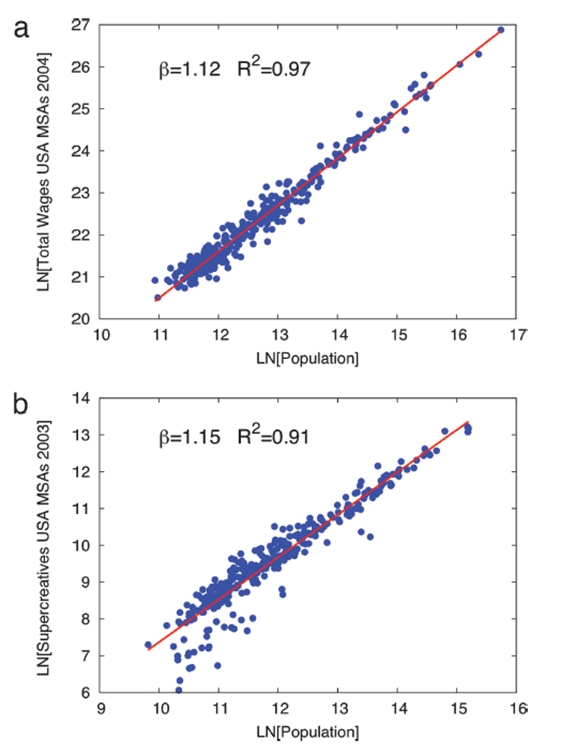
Source: Bettencourt et al. (2007)
Not surprisingly another straight line
Another power law
Bettencourt-West or Marshall’s law
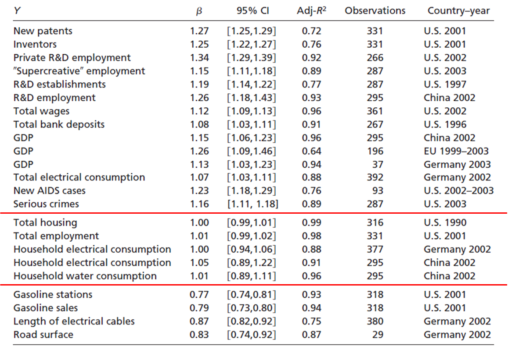
Source: Bettencourt et al. (2007)
Bettencourt-West or Marshall’s law
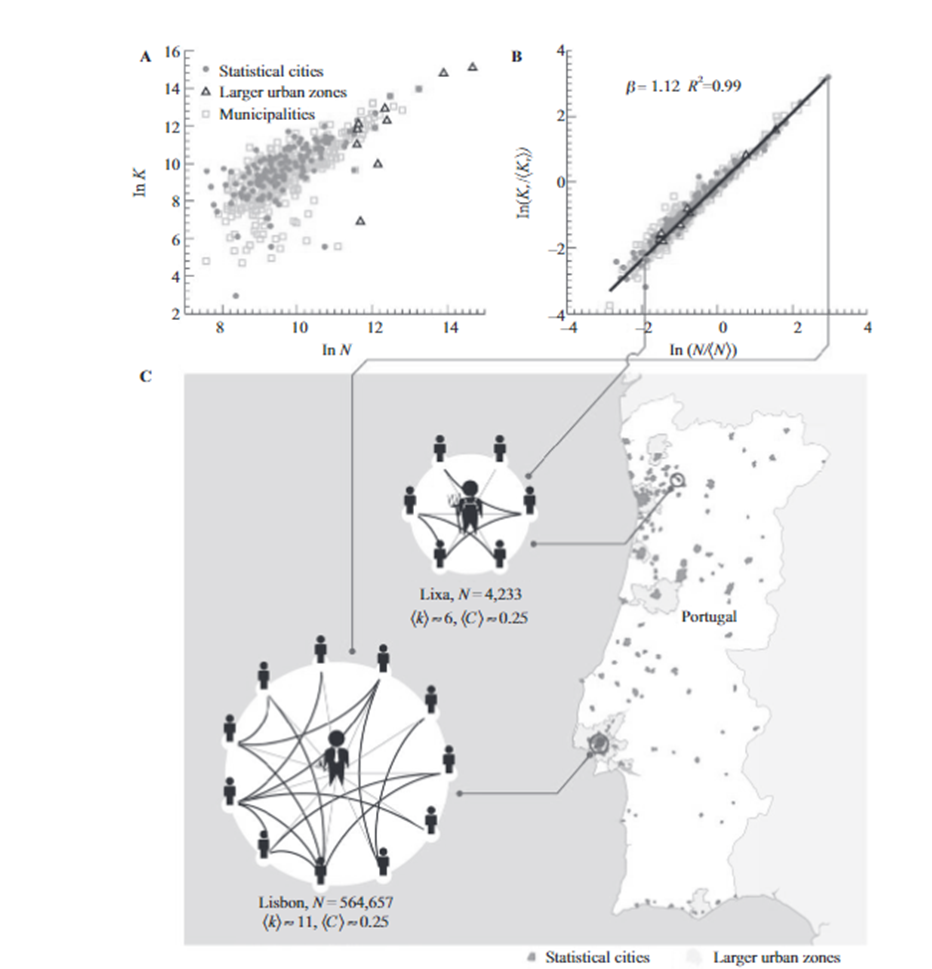
An average urban dweller in the capital, Lisbon, has approximately twice as many reciprocated mobile phone contacts, k, as an average individual in the rural town of Lixa.
Source: Bettencourt (2021)
Bettencourt-West or Marshall’s law
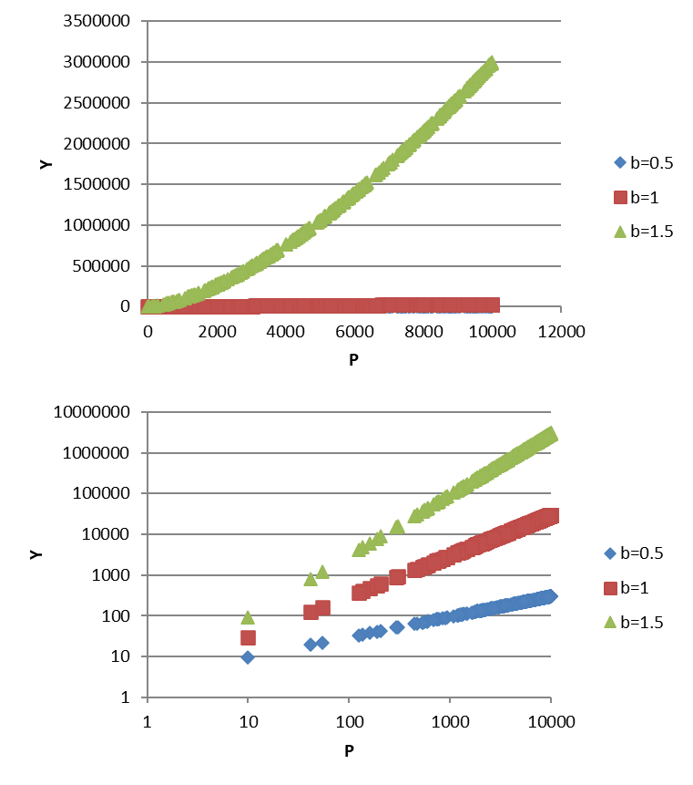
\(Y=3P^b\)
300 random observation
Plotting the results
Economies of scale
\(b<1\) decreasing returns to scale
\(b=1\) constant returns
\(b>1\) increasing returns
SF networks, economies of scale?
Revisit economies of scale
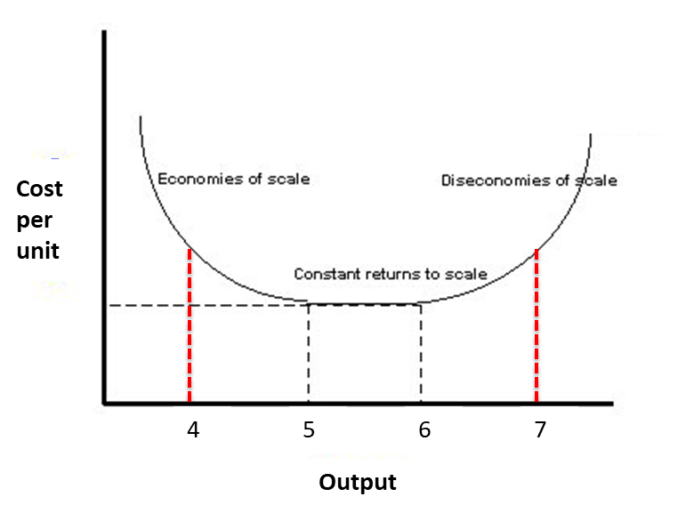
Epilogue
Bettencourt (2021):
Cities, of course, do not really have their own dynamics; they depend on decisions made by people, corporations, governments, and others. The aggregate statistics of all their decisions will therefore emerge as key and provide another con- nection to the uses of information in urban science.
References
Albert, Réka, Hawoong Jeong, and Albert-László Barabási. 2000. “Error and Attack Tolerance of Complex Networks.” Nature 406 (6794): 378–82.
Barabási, Albert-László, and Réka Albert. 1999. “Emergence of Scaling in Random Networks.” Science 286 (5439): 509–12.
Batty, Michael. 2013. The New Science of Cities. MIT press.
Bettencourt, Luı́s MA. 2021. “Introduction to Urban Science: Evidence and Theory of Cities as Complex Systems.”
Bettencourt, Luı́s MA, José Lobo, Dirk Helbing, Christian Kühnert, and Geoffrey B West. 2007. “Growth, Innovation, Scaling, and the Pace of Life in Cities.” Proceedings of the National Academy of Sciences 104 (17): 7301–6.
Coe, Neil M, Philip F Kelly, and Henry WC Yeung. 2019. Economic Geography: A Contemporary Introduction. John Wiley & Sons.
Erdős, Paul, Alfréd Rényi, et al. 1960. “On the Evolution of Random Graphs.” Publ. Math. Inst. Hung. Acad. Sci 5 (1): 17–60.
O’sullivan, Arthur. 2012. “Urban Economics 8th Ed.”
Torres, Sonia H, Marı́a Montes de Oca, Eduardo Loeb, Priva Zabner-Oziel, Valentina Wallis, and Noelina Hernández. 2009. “Isoenzimas de Lactatodeshidrogenasa En El músculo Esquelético de Pacientes Con EPOC.” Archivos de Bronconeumologı́a 45 (2): 75–80.
Watts, Duncan J, and Steven H Strogatz. 1998. “Collective Dynamics of ‘Small-World’networks.” Nature 393 (6684): 440–42.